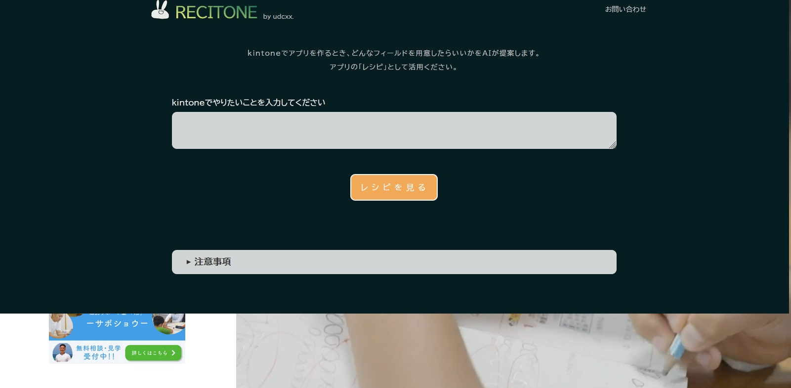
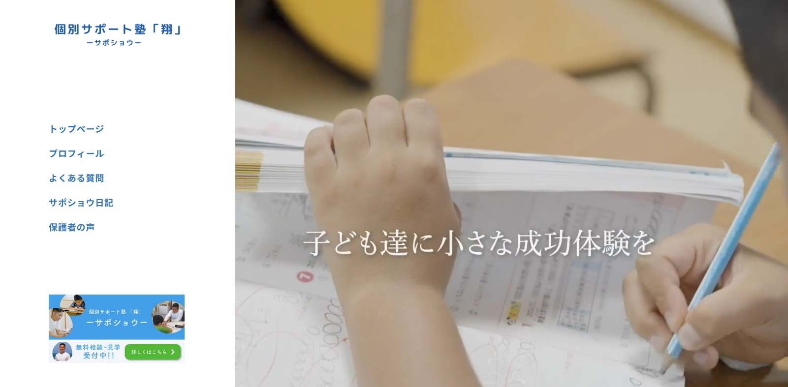
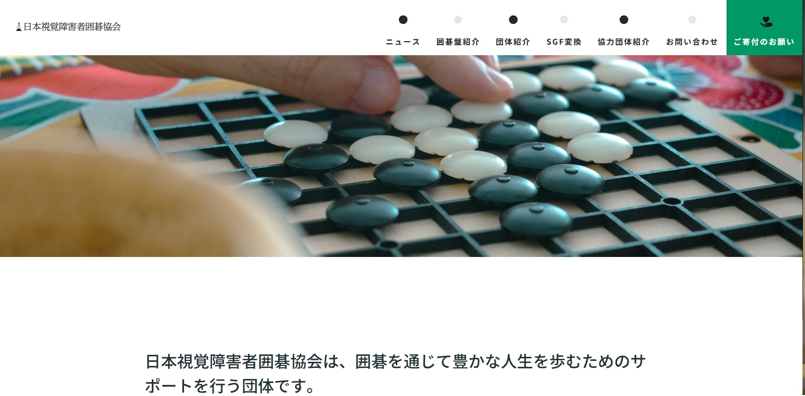

udcxx.
creative制作実績

AIでkintone活用をサポート！
RECITONE
AIを使ったWebツール「RECITONE」を開発しました。
RECITONEは、kintoneで何を管理したいかを入力するだけで、kintoneアプリの設計図となる「レシピ」をAIが提案してくれるツールです。

個別サポート塾「翔」
沖縄県那覇市にある個別サポート塾「翔」（サポショウ）様の公式サイトを制作しました。

日本視覚障害者囲碁協会
囲碁を通じて豊かな人生を歩むためのサポートを行う、日本視覚障害者囲碁協会様の公式サイトを制作しました。
ほかにも、様々なツール・API・Webサイトの制作に
携わらせていただきました。
そのほかの制作実績は、以下にまとめています。